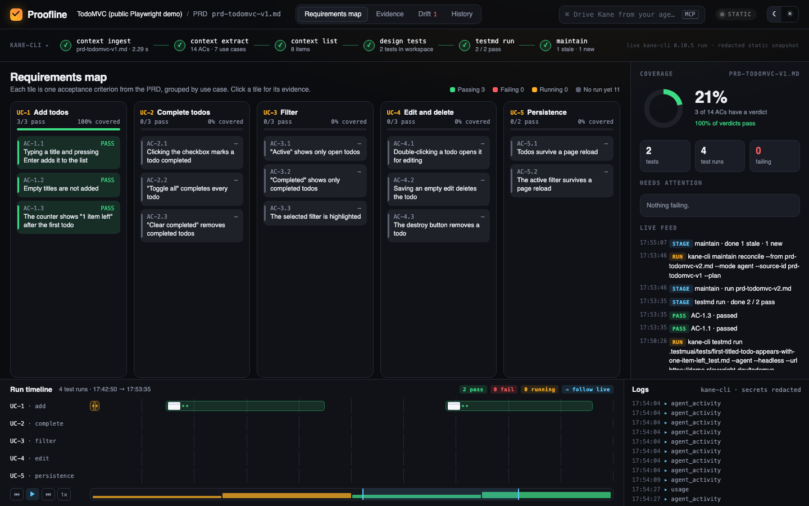
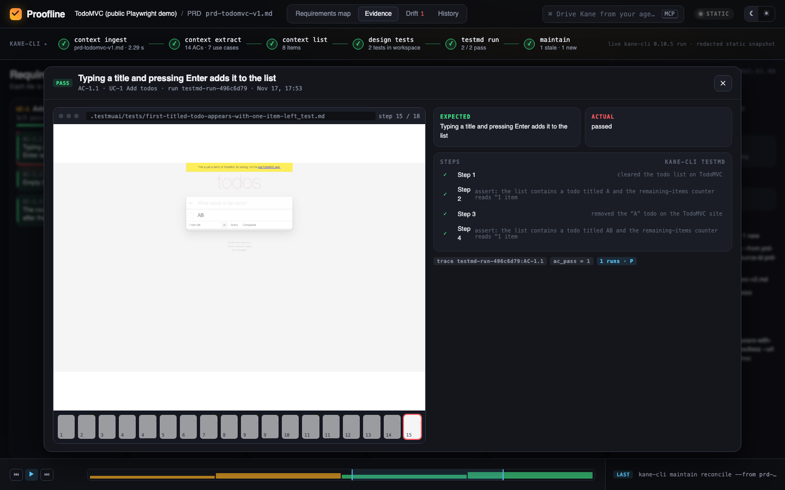
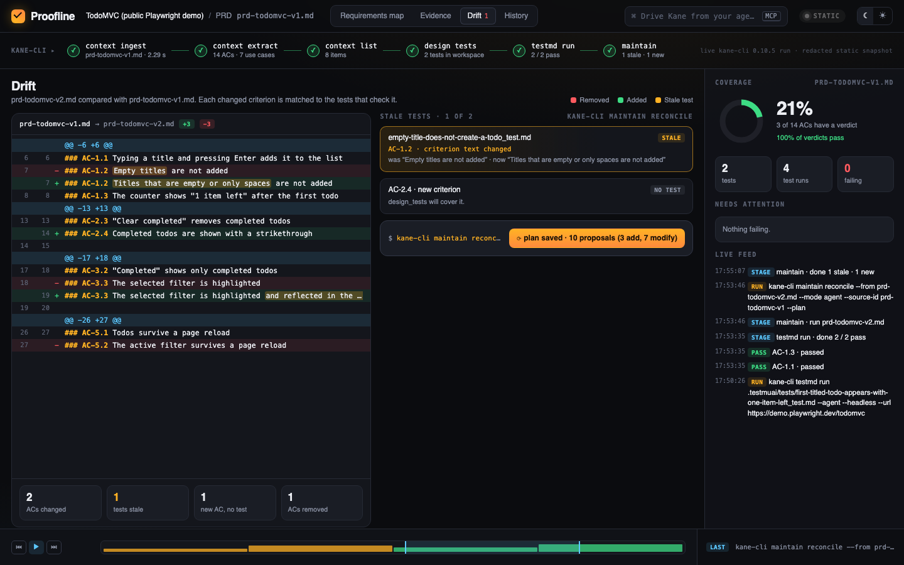
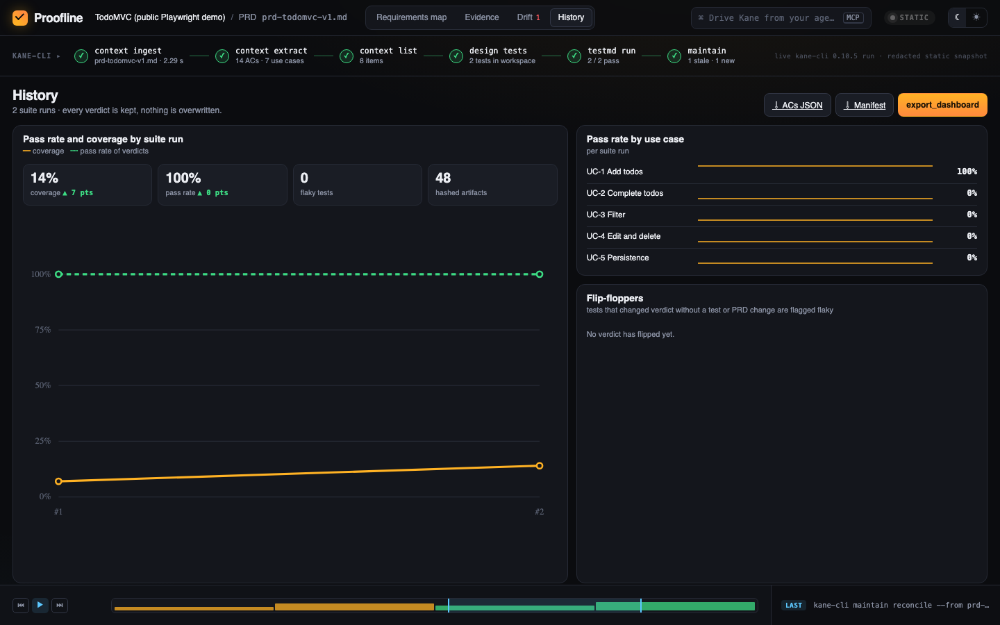

Proofline
Every requirement, proven live. A verification dashboard and MCP server for Kane CLI.
Give Proofline a PRD and it drives kane-cli through the whole loop: context, test design,
testmd runs, sealed evidence packs, and drift when the PRD changes. Every acceptance criterion
becomes a tile that turns green or red as Kane proves it, and the screenshots, steps and logs behind each
verdict are one click away. Every artifact is hashed with sha256 and stamped with its creation time.
A real Kane CLI run
The dashboard demo is a frozen, redacted snapshot of a live session on November 17, 2026,
with kane-cli 0.10.5 testing the public Playwright TodoMVC demo
against this PRD.
It is not fixture data: every verdict, step and screenshot came from Kane.
context ingest → context extract (14 ACs · 7 use cases) → context list → design tests (2 tests) → testmd run (2 / 2 pass) → maintain (1 stale · 1 new)
What you see




Setup
git clone https://github.com/mso-docs/proofline && cd proofline
python3 -m proofline demo # fixture run, no account needed; open http://127.0.0.1:8777
npm install -g @testmuai/kane-cli
kane-cli login # OAuth profile; Proofline never sees or stores the token
python3 -m proofline status # confirms kane-cli is found
python3 -m proofline serve # dashboard on 127.0.0.1:8777 (loopback only)Python 3.10+ standard library only. No pip installs.
Usage
python3 -m proofline ingest examples/prd-todomvc-v1.md # kane-cli context ingest
python3 -m proofline design uc-1 --max 3 # kane-cli design tests
python3 -m proofline run --url https://demo.playwright.dev/todomvc # kane-cli testmd run, every test
python3 -m proofline maintain examples/prd-todomvc-v2.md # PRD diff + kane-cli maintain reconcile --plan
python3 -m proofline manifest --out proof/manifest.json # hashed artifact manifest
python3 -m proofline pages docs/demo --root runs # redacted static demo like this one
python3 scripts/scan_pages.py docs # pre-publish scan; must print RESULT: PASSMCP tools
python3 -m proofline mcp is a stdio MCP server (JSON-RPC 2.0, no dependencies) for Cursor, Codex or Claude Code.
| Tool | What it does |
|---|---|
proofline_status | kane-cli install, current session, pipeline state |
ingest_prd | copy and hash a PRD, run kane-cli context ingest, parse its ACs |
extract_context · list_context | kane-cli context extract (agent mode) and context list --json |
design_tests | kane-cli design tests for a use case, mapping Kane's criteria to PRD ACs |
run_suite | kane-cli testmd run per test, sealing evidence packs and screenshots |
maintain_drift | word-level PRD diff plus kane-cli maintain reconcile --plan |
get_run · get_evidence · list_acs | one run, the evidence behind an AC, every AC with verdict and flakiness |
compare_runs | regressions and fixes between two runs |
export_manifest · export_dashboard · open_dashboard | hashed manifest, static report, dashboard URL |
Proof of work
The manifest lists every artifact with path, sha256, bytes,
created_at and session_id, re-verifies each hash, and adds a hash over the whole list
(manifest_sha256 b3a4a9db…7ef92a6). Screenshots are published byte for byte, so their published hash matches.
PRDs, tests and the drift report are published redacted. Raw kane-cli logs and sealed evidence packs stay private, but their hashes are listed.
{
"path": "sessions/20261117T223723Z-51847f/prd/prd-todomvc-v1.md",
"sha256": "a59100da4c8f654d1a4c8e95601db19f36009e2d64b3ae10ba393fb18656696d",
"bytes": 889,
"created_at": "2026-11-17T22:37:23.301+00:00",
"kind": "prd",
"verified": true
}Artifacts
- Dashboard demo (map, evidence, drift, history)
- manifest.json · acs.json · snapshot.json
- drift.json: PRD v1 → v2 drift and Kane's reconcile plan
- Kane-designed tests: first titled todo · empty title
- Source, including 30 unit tests and an MCP round-trip test
Redaction: account names, emails, Kane share links, test-manager and artifact-store URLs, account ids, tokens, home paths and host names are replaced with placeholders such as <KANE_SHARE_LINK>. scripts/scan_pages.py (redaction scan, gitleaks, and a check for private values) has to pass before this site is published.